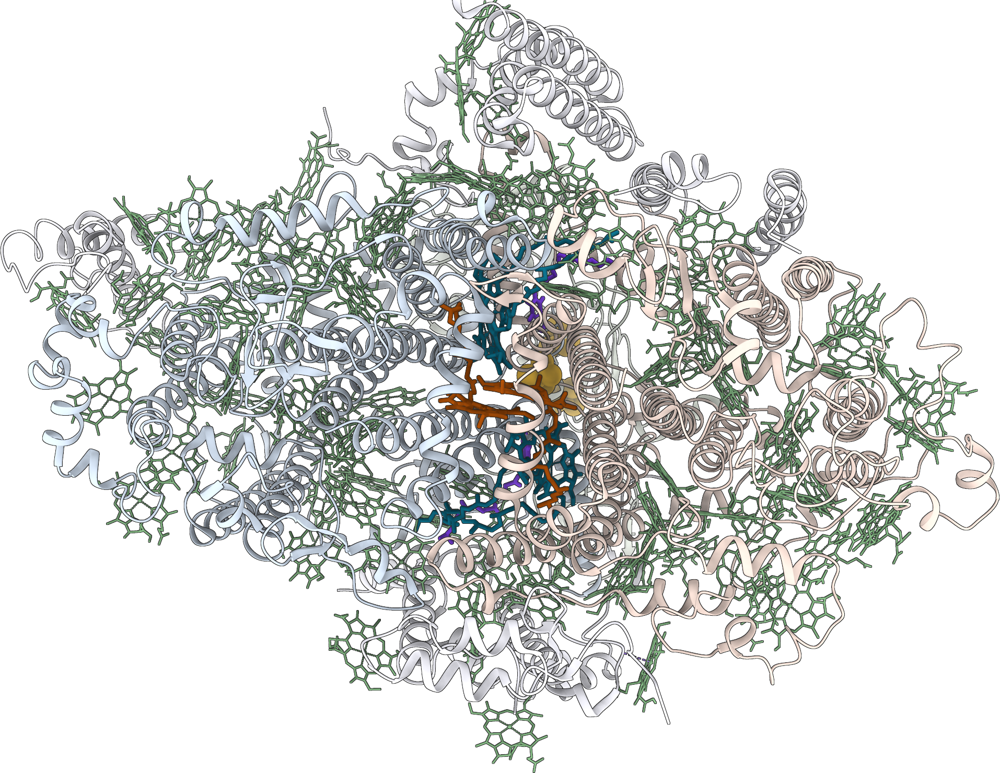
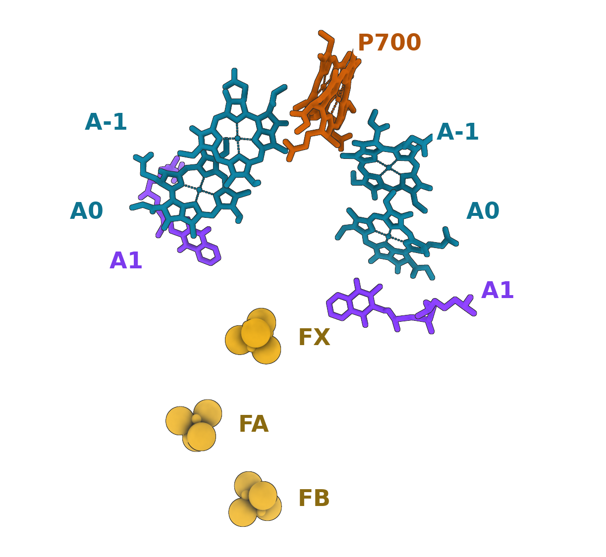

CHM 598 · Introduction to Photochemistry
How the protein’s redox state decides where an absorbed photon’s energy goes
An excited chlorophyll has about 6 ns. An open reaction centre uses it in about 30 ps. A closed one does not.
Ditsa Mallick · [presentation date]
Scales of photosynthesis
zoom 50 cm → 1 Å · absorb → move → separate → build → search → learn
Schematic; scale bar gives approximate true size · PSI: 96 Chl per monomer (Jordan 2001) · loops every ~50 s, click to restart
2
The question
zoom 1 nm · absorb → funnel → climb → trap → poise → design
Every absorbed photon ends in exactly one fate. Its yield is its rate divided by the sum of all rates.
Φᵢ = kᵢ / Σⱼ kⱼ
open PSI: Φ_CS ≈ 0.97–0.99
If the protein’s redox state changes one rate, where does the photon’s energy go instead?
Trapping yield of PSI: Gobets & van Grondelle, BBA 1507, 80 (2001) · CHM 598 L13, L16 · the closed-centre split is illustrative
3
Energetics
zoom 50 cm · absorb → move → separate → build → search → learn
1.2 × 10⁵ TW
sunlight striking Earth
13.5 TW
human use, 2001
E = hc/λ = 1239.8 eV·nm / λ
680 nm → 1.82 eV = 176 kJ mol⁻¹
C–H ≈ 4.3 eV, O–H ≈ 4.8 eV > 1 photon
8 photons ≈ 14.4 eV → O₂ + 2 NADPH
stored: 4 e⁻ × 1.14 V ≈ 4.6 eV ≈ 32 %
So photosynthesis stores energy one electron at a time, and every step has to outrun decay of the excited state.
Lewis & Nocera, PNAS 2006 · E°′(O₂/H₂O) = +0.82 V, E°′(NADP⁺/NADPH) = −0.32 V at pH 7
4
Excited‑state kinetics
zoom 1 nm · absorb → move → separate → build → search → learn
Upper states relax in femtoseconds, so emission, transfer and chemistry start from the lowest S₁: for Chl, the Qy state.
Two HOMOs and two LUMOs mix into a strong Soret band (≈ 430 nm) and weaker Q bands (Qy ≈ 670 nm). The protein tunes Qy.
Φ_F = kᵣ / (kᵣ + k_IC + k_ISC + k_EET)
Chl a: τ ≈ 6 ns, Φ_F ≈ 0.32
→ kᵣ = Φ_F/τ ≈ 5 × 10⁷ s⁻¹
Kasha 1950 · Gouterman 1961 · Weber & Teale 1957 (Chl a Φ_F in ether)
5
Franck–Condon principle
zoom 1 Å · absorb → move → separate → build → search → learn
Electrons move far faster than nuclei. Intensity follows the overlap of vibrational wavefunctions.
I(0→v′) ∝ |⟨χ₀|χ_v′⟩|²
= e^(−S) S^v′ / v′!
S = Δ²/2, λ = S ħω
This overlap becomes the Marcus term in electron transfer (lecture 16).
Franck 1926 · Condon 1926 · CHM 598 lectures 15–16 · displaced harmonic‑oscillator model, ħω = 1
6
Light harvesting
zoom 15 nm · absorb → funnel → climb → trap → poise → design
k_abs = σ · I
σ ~ 10⁻¹⁶ cm²
I ~ 10¹⁷ photons cm⁻² s⁻¹
→ k_abs ~ 10 s⁻¹ (full sun)
Share one costly reaction centre among ~100 cheap pigments: ~100× the photon supply.
Now the energy must travel to the centre, and finish well inside 6 ns.
~10 photons s⁻¹ per Chl in full sun: Blankenship, Molecular Mechanisms of Photosynthesis (2014) · order‑of‑magnitude estimate
7
Excitonic coupling
zoom 1 nm · absorb → funnel → climb → trap → poise → design
V = κ μ² / (4πε₀ n² R³)
κ = cos θ₁₂ − 3 cos θ₁ cos θ₂
E± = E₀ ± V, |±⟩ = (|eg⟩ ± |ge⟩)/√2
f± ∝ |μ₁ ± μ₂|²
Head‑to‑tail (κ < 0): the bright state is the lower one → red shift. Side‑by‑side (κ > 0): bright state on top → blue shift.
Worked example: μ ≈ 4 D, R = 0.9 nm, κ = −2, n² ≈ 2 → V ≈ −110 cm⁻¹, enough for sub‑ps transfer. The same physics colours dye aggregates and stacked COF layers.
Kasha, Rawls & El‑Bayoumi 1965 · V(cm⁻¹) ≈ 5.04 κ μ²(D²) / n²R³(nm³), point‑dipole approximation
8
Energy‑transfer kinetics
zoom 1–5 nm · absorb → funnel → climb → trap → poise → design
k_F = (1/τ_D) · (R₀/R)⁶
R₀⁶ ∝ κ² Φ_D J / n⁴
E = 1 / (1 + (R/R₀)⁶)
|V| ≪ λ (reorganisation, disorder): incoherent Förster hops. |V| ≳ λ: delocalised excitons (Redfield). PSI’s ~1 nm Chl spacing sits in between: coupled clusters hopping to each other.
Φ = 1/(1 + τ_trap/τ_loss) = 1/(1 + 25 ps / 6 ns) ≈ 0.996
Förster 1948 · regimes and PSI trapping: Gobets & van Grondelle 2001 · population curves are illustrative
9
Photosystem I
zoom 15 nm · absorb → funnel → climb → trap → poise → design

Synechocystis PSI monomer (PDB 5OY0), stromal view: 12 proteins, 96 Chl (green), P700 (orange), A₋₁/A₀ (teal), A₁ (purple), Fe–S (gold).
4× antenna = 4× photons, a longer walk, still tens of ps.
Jordan et al., Nature 411, 909 (2001) · structure: PDB 5OY0 (Malavath et al. 2018), rendered in ChimeraX · walk is a teaching toy: unbiased random walk, trap at the centre
10
Red chlorophylls
zoom 2 nm · absorb → funnel → climb → trap → poise → design
Strongly coupled chlorophyll clusters absorb at 708–740 nm, below P700 at 700 nm. Cyanobacterial PSI trimers have several, and the Spirulina trimer has one at ~740 nm.
k_up/k_down = (g_up/g_down) e^(−ΔE/kT)
295 K: ≈ 0.02 · 77 K: ≈ 5 × 10⁻⁷
At room temperature heat lifts energy back to P700. Freeze to 77 K and it stays trapped on the red pigments.
Karapetyan, Holzwarth & Rögner, FEBS Lett. 460, 395 (1999) · Gobets & van Grondelle 2001 · CHM 598 L13 · degeneracy ratio set to 1 in the plot
11
Low-temperature fluorescence
zoom 15 nm · absorb → funnel → climb → trap → poise → design
At 77 K uphill transfer stops (previous slide), so red pigments keep their energy long enough to fluoresce. The F760 band becomes a direct readout.
Φ_F760 = k_F / (k_F + k_nr + k_Q)
k_Q: quenching by the reaction centre
In Spirulina trimers, P700⁺ quenches F760. So the red band’s size depends on the reaction centre’s redox state.
Karapetyan et al. 1999; Shubin, Bezsmertnaya & Karapetyan, J. Photochem. Photobiol. B 30, 153 (1995) · spectra are a schematic model, not measured data
12
Red chlorophylls: the evidence
zoom 15 nm · absorb → funnel → climb → trap → poise → design
Five cyanobacterial PSI cores trap in 23–50 ps. Red‑Chl content alone explains the spread.
At 295 K, light up to 750 nm oxidises P700 equally well. At 5 K only about half the excitations reach P700.
Red forms in LHCI slow trapping about twofold. Models of all 96 Chls reproduce PSI’s spectra and lifetimes.
Gobets et al., Biophys. J. 81, 407 (2001) · Pålsson et al., Biophys. J. 74, 2611 (1998) · Jennings et al., BBA 1557, 91 (2003) · Wientjes et al., Biophys. J. 101, 745 (2011) · Byrdin et al., Biophys. J. 83, 433 (2002) · Sener et al., JPCB 106, 7948 (2002)
13
Ultrafast spectroscopy
zoom 15 nm · absorb → funnel → climb → trap → poise → design
A femtosecond pump pulse starts the clock; a delayed probe pulse reads the change in absorption at each delay.
ΔA(λ,t) = Σᵢ DADSᵢ(λ) e^(−t/τᵢ)
PSI: τ_trap ≈ 20–50 ps
The antenna signal fades as the P700⁺ band grows with the same lifetime: excitation became charge.
Trapping times: Gobets & van Grondelle, BBA 1507, 80 (2001) · traces and map are a schematic model, not measured data
14
Reaction centres
zoom 5 nm · absorb → funnel → climb → trap → poise → design

The real wire: PSI cofactors from PDB 5OY0, membrane normal vertical. Two branches meet at F_X.
Type II: quinone acceptors, one active branch. Type I (PSI): Fe–S acceptors, both branches. Special pair: coupled dimer, lower‑energy trap, easier to oxidise.
Deisenhofer et al., Nature 318, 618 (1985) · cofactors: PDB 5OY0 · Guergova‑Kuras et al., PNAS 98, 4437 (2001) · Brettel 1997 · Blankenship 2014 · schematic layout
15
Reaction-centre kinetics
zoom 5 nm · absorb → funnel → climb → trap → poise → design
Open PSI traps in 6–9 ps, about 3× faster than assumed. Removing P_B’s Mg ligand slows only the second step, ≈2×.
Far‑red pulses make P700⁺A₀⁻ in under 180 fs, and A₁⁻ follows in 26 ps. P700 and A₀ act as one adiabatic system.
Electrostatics put P700→A₀ and A₁A→F_X downhill. Published A₁ potentials span ≈350 mV.
Müller et al., Biophys. J. 85, 3899 (2003) · Holzwarth et al., Biophys. J. 90, 552 (2006) · Cherepanov et al., BBA 1858, 895 (2017) · Sétif & Brettel, Biochemistry 32, 7846 (1993) · Vassiliev et al., BBA 1507, 139 (2001) · Ptushenko et al., Photosynth. Res. 97, 55 (2008) · Santabarbara et al., BBA 1708, 283 (2005)
16
Electron tunneling
zoom 1 nm · absorb → funnel → climb → trap → poise → design
k_ET = (2π/ħ) |H_AB|² · FC
|H_AB|² = V₀² e^(−βR), β ≈ 1.4 Å⁻¹
log₁₀k = 13 − 0.6(R − 3.6)
− 3.1 (ΔG° + λ)²/λ
0.6 decade per Å (= β/ln 10): every ~1.7 Å costs 10×. Cofactors sit ≤ 14 Å apart.
Ru‑labelled proteins: the fold tunes the decay (Gray & Winkler).
Moser et al., Nature 355, 796 (1992) · Moser, Page, Farid & Dutton 1995 · Page et al., Nature 402, 47 (1999) · Gray & Winkler 1996 · CHM 598 L16 · λ = 0.7 eV in plot
17
Charge separation
zoom 1 nm · absorb → funnel → climb → trap → poise → design
k = (2π/ħ)|H_DA|² (4πλk_BT)^(−½)
× exp[−(ΔG° + λ)² / 4λk_BT]
ΔG‡ = (ΔG° + λ)² / 4λ
Forward steps with −ΔG° ≈ λ are activationless. Recombination with −ΔG° ≫ λ falls in the inverted region and slows down.
MD/QM/MM (DFT/MRCI) on all 96 Chls: energies fluctuate, pathways form transiently. Accurate, and very expensive.
Marcus 1956 · Marcus & Sutin, BBA 1985 · Reiter, Kiss, Hauer & de Vivie‑Riedle, Chem. Sci. 14, 3117 (2023)
18
Charge separation in PSI
zoom 5 nm · absorb → funnel → climb → trap → poise → design
One long tunnel would be slow. Short hops ≤ 14 Å, each with −ΔG° near λ, are fast.
absorbed: 1.77 eV
stored: ≈ 0.87 eV
price of Φ ≈ 1: ~half
A₀ mediates between P700* and A₁; each step outruns recombination.
Approximate E_m and lifetimes: Brettel, BBA 1318, 322 (1997); two A₁ → F_X branches: Guergova‑Kuras et al. 2001 · CHM 598 L16
19
Redox poising
zoom 3 nm · absorb → funnel → climb → trap → poise → design
Each cofactor is reduced or oxidised according to how the solution potential compares with its midpoint.
f_red = 1 / (1 + e^(nF(E_h − E_m)/RT))
ferricyanide ≈ +0.36 V · dithionite ≈ −0.66 V
Oxidise P700 and the trap becomes a quencher. Reduce F_A/F_B and electrons cannot leave, so charge pairs recombine. Either way the photon’s energy is redistributed.
Midpoints: Brettel, BBA 1318, 322 (1997) · dithionite: Mayhew, Eur. J. Biochem. 85, 535 (1978), depends on pH and concentration · CHM 598 L13 (equilibrium)
20
Experimental design
zoom 1 cm · absorb → funnel → climb → trap → poise → design
Add a reductant (dithionite) in steps, measure the potential, freeze each sample to 77 K and record its emission. Then add an oxidant (ferricyanide).
A change that reverses with oxidant means redox control. A change that does not reverse means the protein was damaged.
Measure E_h in the sample itself, add redox mediators so it equilibrates, and dark-adapt before freezing.
Schematic of the experimental approach, no measured data shown · Mayhew 1978 · Karapetyan et al. 1999
21
Kinetic model
zoom 2 nm · absorb → funnel → climb → trap → poise → design
An excitation on a red pigment can fluoresce, decay as heat, or be removed by the reaction centre. Change one exit and the others change too.
Φ₀/Φ = 1 + k_Q τ₀
τ₀ = 1/(k_F + k_nr)
Making the trap less effective should brighten F760 and lengthen its lifetime. Lifetime measurements can test this separately from yield.
Stern–Volmer form of rate competition · CHM 598 L13, L16 · k_F = (15 ns)⁻¹, k_nr = (5 ns)⁻¹ are illustrative values
22
When the trap is closed
zoom 5 nm · absorb → funnel → climb → trap → poise → design
Closing PSI raises emission 12% at room temperature but cuts it about 50% at 5 K. Below ~160 K, P700⁺ is a quencher.
PSI’s bound Fe–S acceptors were first redox‑titrated in 1974. EPR now resolves F_X, F_A and F_B.
Back‑reactions trade yield for safety around O₂. PSI damage is rare in vivo but recovers very slowly.
Byrdin et al., Biophys. J. 79, 992 (2000) · Evans, Reeves & Cammack, FEBS Lett. 49, 111 (1974) · Vassiliev et al., BBA 1507, 139 (2001) · Rutherford et al., FEBS Lett. 586, 603 (2012) · Sonoike, Physiol. Plant. 142, 56 (2011)
23
Ongoing work
zoom 1 nm · absorb → funnel → climb → trap → poise → design
Place a cysteine a few ångströms from one red chlorophyll, with serine as the near-identical control (O vs S).
Its thiol can be oxidised or reduced. Each form carries different charge and polarity, which could shift the pigment’s site energy.
Same titrate–freeze–reverse protocol: does the F760 band shift or change size only when the thiol can change redox state?
Hypothesis and design only, no data shown · site-energy tuning by the protein environment: Gobets & van Grondelle 2001; Karapetyan et al. 2014
24
Design lessons from the literature
zoom 15 nm · absorb → funnel → climb → trap → poise → design
Chl f drives PSI charge separation at 745 nm. Far‑red PSI uses light to ≈800 nm with four Chl f sites.
Tethering F_B to a hydrogenase gives 105 e⁻ per PSI per second, twice the in‑vivo rate, by removing diffusion.
Tune site energies, regulate flow and protect. Plant PSI–LHCI (600 kDa, 2.8 Å) shows all three in one complex.
Nürnberg et al., Science 360, 1210 (2018) · Gisriel et al., Sci. Adv. 6, eaay6415 (2020) · Chen & Blankenship, Trends Plant Sci. 16, 427 (2011) · Grimme et al., JACS 130, 6308 (2008) · Lubner et al., PNAS 108, 20988 (2011) · Qin et al., Science 348, 989 (2015) · Scholes et al. 2011 · Croce & van Amerongen 2014, 2020 · Chitnis 2001 · Ort et al. 2015
25
Artificial photosynthesis
zoom 10 cm · absorb → funnel → climb → trap → poise → design
| Step | Photosystem I | Artificial photocatalyst |
|---|---|---|
| Absorb | ~100‑Chl antenna: ~100× the photon supply | band gap ≥ 1.23 eV + overpotentials, so ≈ 1.8–2.4 eV in practice |
| Transfer | sub‑ps exciton hops; trapping yield ≈ 0.99 | excitons or carriers must reach the surface before recombining |
| Separate | P700⁺A₀⁻ in ps; Marcus‑tuned electron chain | heterojunctions, donor–acceptor frameworks, cocatalysts |
| Catalyse | Fd/FNR → NADPH; PSII’s Mn₄CaO₅ cluster for water | H₂, O₂, H₂O₂ or CO₂‑reduction cocatalysts that survive photocorrosion |
Metrics differ (biomass vs H₂ vs electricity): compare orders of magnitude, not decimals · Jordan 2001 · Takata 2020
26
Summary
absorb → funnel → climb → trap → poise → design
1 · Rates compete. Each fate’s yield is its share of the total rate: Φᵢ = kᵢ/Σk.
2 · Red pigments need heat. Uphill transfer follows e^(−ΔE/kT), so at 77 K they become reporters.
3 · Redox poises the trap. The Nernst equation sets which cofactors are reduced, which opens or closes the trap.
4 · Design lesson. A solar-fuel catalyst must keep its trap open: clear electrons away fast.
Each step pairs a stage of the photon’s path with the lecture concept that governs it
27
CHM 598 · Photochemistry
Q & A
Thanks for listening. Questions, comments and corrections are very welcome.
Questions?
↗
slides/
ditsa‑m.github.io/ catching‑a‑photon
speaker/
Ditsa Mallick
References 1/4
Lewis NS, Nocera DG. Powering the planet. PNAS 103, 15729 (2006).
Blankenship RE et al. Comparing photosynthetic and photovoltaic efficiencies. Science 332, 805 (2011).
Franck J. Trans. Faraday Soc. 21, 536 (1926); Condon EU. Phys. Rev. 28, 1182 (1926).
Kasha M. Characterization of electronic transitions in complex molecules. Discuss. Faraday Soc. 9, 14 (1950).
Gouterman M. Spectra of porphyrins. J. Mol. Spectrosc. 6, 138 (1961).
Weber G, Teale FWJ. Absolute quantum yield of fluorescent solutions. Trans. Faraday Soc. 53, 646 (1957).
Kasha M, Rawls HR, El‑Bayoumi MA. The exciton model in molecular spectroscopy. Pure Appl. Chem. 11, 371 (1965).
Förster T. Zwischenmolekulare Energiewanderung und Fluoreszenz. Ann. Phys. 437, 55 (1948).
Blankenship RE. Molecular Mechanisms of Photosynthesis, 2nd ed. Wiley‑Blackwell (2014).
Jordan P et al. Three‑dimensional structure of cyanobacterial photosystem I at 2.5 Å. Nature 411, 909 (2001).
Malavath T et al. Structure and function of wild‑type and subunit‑depleted photosystem I in Synechocystis. BBA Bioenerg. 1859, 645 (2018); PDB 5OY0.
Pettersen EF et al. UCSF ChimeraX. Protein Sci. 30, 70 (2021).
CHM 598 Introduction to Photochemistry, lectures 13–16 (Fall 2026).
29
References 2/4
Gobets B, van Grondelle R. Energy transfer and trapping in photosystem I. Biochim. Biophys. Acta 1507, 80 (2001).
Karapetyan NV, Holzwarth AR, Rögner M. The photosystem I trimer of cyanobacteria: molecular organization, excitation dynamics and physiological significance. FEBS Lett. 460, 395 (1999).
Shubin VV, Bezsmertnaya IN, Karapetyan NV. Efficient energy transfer from the long‑wavelength antenna chlorophylls to P700 in photosystem I complexes from Spirulina platensis. J. Photochem. Photobiol. B 30, 153 (1995).
Karapetyan NV et al. Long‑wavelength chlorophylls in photosystem I of cyanobacteria: origin, localization, and functions. Biochemistry (Moscow) 79, 213 (2014).
Deisenhofer J, Epp O, Miki K, Huber R, Michel H. Photosynthetic reaction centre of Rhodopseudomonas viridis at 3 Å. Nature 318, 618 (1985).
Guergova‑Kuras M et al. Evidence for two active branches for electron transfer in photosystem I. PNAS 98, 4437 (2001).
Brettel K. Electron transfer and arrangement of the redox cofactors in photosystem I. Biochim. Biophys. Acta 1318, 322 (1997).
Marcus RA. J. Chem. Phys. 24, 966 (1956); Marcus RA, Sutin N. Biochim. Biophys. Acta 811, 265 (1985).
Page CC, Moser CC, Chen X, Dutton PL. Natural engineering principles of electron tunnelling. Nature 402, 47 (1999).
Reiter S, Kiss FL, Hauer J, de Vivie‑Riedle R. Thermal site energy fluctuations in photosystem I. Chem. Sci. 14, 3117 (2023).
Mayhew SG. The redox potential of dithionite and SO₂⁻ from equilibrium reactions with flavodoxins, methyl viologen and hydrogen plus hydrogenase. Eur. J. Biochem. 85, 535 (1978).
Gray HB. Powering the planet with solar fuel. Nat. Chem. 1, 7 (2009).
Takata T et al. Photocatalytic water splitting with a quantum efficiency of almost unity. Nature 581, 411 (2020).
Nishiyama H et al. Photocatalytic solar hydrogen production from water on a 100‑m² scale. Nature 598, 304 (2021).
Zhou P et al. Solar‑to‑hydrogen efficiency of more than 9% in photocatalytic water splitting. Nature 613, 66 (2023).
30
References 3/4
Byrdin M et al. Light harvesting in photosystem I: modeling based on the 2.5‑Å structure of photosystem I from Synechococcus elongatus. Biophys. J. 83, 433 (2002).
Sener MK, Lu D, Ritz T, Park S, Fromme P, Schulten K. Robustness and optimality of light harvesting in cyanobacterial photosystem I. J. Phys. Chem. B 106, 7948 (2002).
Gobets B et al. Time‑resolved fluorescence emission measurements of photosystem I particles of various cyanobacteria: a unified compartmental model. Biophys. J. 81, 407 (2001).
Pålsson LO et al. Energy transfer and charge separation in photosystem I: P700 oxidation upon selective excitation of the long‑wavelength antenna chlorophylls. Biophys. J. 74, 2611 (1998).
Jennings RC et al. The photochemical trapping rate from red spectral states in PSI–LHCI is determined by thermal activation and energy dispersion. BBA Bioenerg. 1557, 91 (2003).
Wientjes E, van Stokkum IHM, van Amerongen H, Croce R. The role of the individual Lhcas in photosystem I excitation energy trapping. Biophys. J. 101, 745 (2011).
Byrdin M et al. Decay kinetics and quantum yields of fluorescence in photosystem I from Synechococcus elongatus with P700 in the reduced and oxidized state. Biophys. J. 79, 992 (2000).
Müller MG, Niklas J, Lubitz W, Holzwarth AR. Ultrafast transient absorption studies on photosystem I reaction centers from Chlamydomonas reinhardtii. 1. Biophys. J. 85, 3899 (2003).
Holzwarth AR, Müller MG, Niklas J, Lubitz W. Ultrafast transient absorption studies on photosystem I reaction centers from Chlamydomonas reinhardtii. 2. Biophys. J. 90, 552 (2006).
Cherepanov DA et al. Mechanism of adiabatic primary electron transfer in photosystem I: femtosecond spectroscopy upon excitation of reaction center in the far‑red edge of the Qy band. BBA Bioenerg. 1858, 895 (2017).
Sétif P, Brettel K. Forward electron transfer from phylloquinone A1 to iron‑sulfur centers in spinach photosystem I. Biochemistry 32, 7846 (1993).
Vassiliev IR, Antonkine ML, Golbeck JH. Iron–sulfur clusters in type I reaction centers. BBA Bioenerg. 1507, 139 (2001).
Ptushenko VV, Cherepanov DA, Krishtalik LI, Semenov AY. Semi‑continuum electrostatic calculations of redox potentials in photosystem I. Photosynth. Res. 97, 55 (2008).
Santabarbara S, Heathcote P, Evans MCW. Modelling of the electron transfer reactions in photosystem I by electron tunnelling theory. BBA Bioenerg. 1708, 283 (2005).
Moser CC, Keske JM, Warncke K, Farid RS, Dutton PL. Nature of biological electron transfer. Nature 355, 796 (1992).
31
References 4/4
Evans MCW, Reeves SG, Cammack R. Determination of the oxidation–reduction potential of the bound iron–sulphur proteins of the primary electron acceptor complex of photosystem I in spinach chloroplasts. FEBS Lett. 49, 111 (1974).
Rutherford AW, Osyczka A, Rappaport F. Back‑reactions, short‑circuits, leaks and other energy wasteful reactions in biological electron transfer. FEBS Lett. 586, 603 (2012).
Sonoike K. Photoinhibition of photosystem I. Physiol. Plant. 142, 56 (2011).
Chitnis PR. Photosystem I: function and physiology. Annu. Rev. Plant Physiol. Plant Mol. Biol. 52, 593 (2001).
Nürnberg DJ et al. Photochemistry beyond the red limit in chlorophyll f–containing photosystems. Science 360, 1210 (2018).
Gisriel C et al. The structure of photosystem I acclimated to far‑red light illuminates an ecologically important acclimation process in photosynthesis. Sci. Adv. 6, eaay6415 (2020).
Chen M, Blankenship RE. Expanding the solar spectrum used by photosynthesis. Trends Plant Sci. 16, 427 (2011).
Grimme RA, Lubner CE, Bryant DA, Golbeck JH. Photosystem I/molecular wire/metal nanoparticle bioconjugates for the photocatalytic production of H₂. J. Am. Chem. Soc. 130, 6308 (2008).
Lubner CE et al. Solar hydrogen‑producing bionanodevice outperforms natural photosynthesis. PNAS 108, 20988 (2011).
Qin X, Suga M, Kuang T, Shen JR. Structural basis for energy transfer pathways in the plant PSI‑LHCI supercomplex. Science 348, 989 (2015).
Scholes GD, Fleming GR, Olaya‑Castro A, van Grondelle R. Lessons from nature about solar light harvesting. Nat. Chem. 3, 763 (2011).
Croce R, van Amerongen H. Natural strategies for photosynthetic light harvesting. Nat. Chem. Biol. 10, 492 (2014).
Croce R, van Amerongen H. Light harvesting in oxygenic photosynthesis: structural biology meets spectroscopy. Science 369, eaay2058 (2020).
Ort DR et al. Redesigning photosynthesis to sustainably meet global food and bioenergy demand. PNAS 112, 8529 (2015).
32